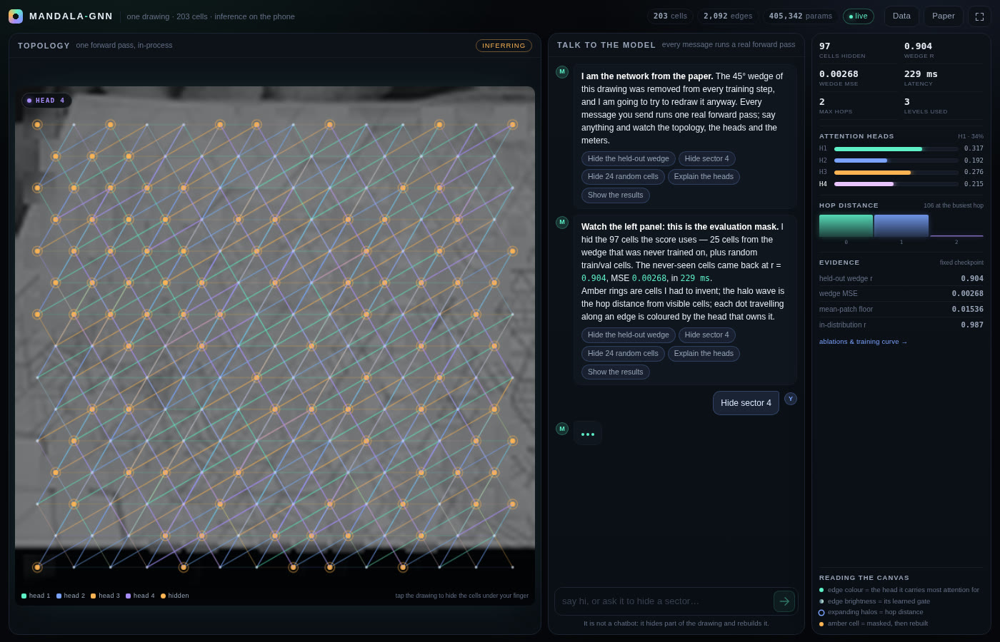

It is not a chatbot
Every message — “hi”, “hide sector 4”, anything — masks cells on the drawing, performs one real forward pass in the server process, and reports what it hid and the measured r, MSE and latency. Nothing on the canvas is a replay.
Research prototype · on-device · November 2026
A 128×128 hand drawing is tiled by a hexagonal mesh — 203 cells, 2,092 directed edges. One contiguous 45° wedge is removed from every training step. A 405k-parameter geometric GNN, with symmetry-aware edge features and a learned gate per edge, reconstructs it from the other seven eighths in 88 seconds of single-threaded CPU training.

Every message — “hi”, “hide sector 4”, anything — masks cells on the drawing, performs one real forward pass in the server process, and reports what it hid and the measured r, MSE and latency. Nothing on the canvas is a replay.
Four heads route attention over the edges. The meters are their share of the attention in that pass. The edge gate is a function of edge geometry, so it does not change between masks — which is why the demo shows the attention instead.
Edge messages carry an RBF of relative position, cos/sin harmonics of the edge angle on the hex grid, and both endpoint radii. A learned gate closes edges the drawing does not support; a three-level pyramid pools and climbs back with gated residuals.
Three passes in the cockpit, recorded from the running page: two sectors and the evaluation mask.
Held-out 45° sector of the hex-tessellation drawing. One seed unless stated.
| Run | wedge r ↑ | wedge MSE ↓ |
|---|---|---|
| hex mesh, 400 steps (this demo) | 0.904 | 0.00268 |
| hex mesh, 2 seeds | 0.896 | 0.00280 |
| same nodes, rewired edges | 0.878 | 0.00325 |
| square grid mesh | 0.960 | 0.00235 |
| star mandala + rings (61 nodes) | 0.742 | 0.00553 |
| no edges (spatial pooling only) | 0.730 | 0.01770 |
| strict MLP, depth 1, no edges | 0.000 | 0.02860 |
| mean-patch floor | — | 0.01536 |
Without per-edge gating the model barely reconstructs the wedge. Confounded: the ablation also removes ~0.3× attention damping. Read it as “gating matters”.
The pyramid still pools spatially, so this is not an MLP. Positional pooling gets most of the way; the graph closes the last 0.17.
MSE 0.0286 against a 0.029 mean-patch baseline: it learns the average patch and nothing else. The wedge needs messages, not memorised positions.
The grid “win” is a tiling artefact: with circular patches, hex (0.989) and square grid (0.990) are indistinguishable, and the no-edge control falls to 0.882 — the lattice is not the source of the gain. Full tables, both patch shapes, all seeds: docs/results.md.
This is a GitHub Pages site, so there is no Python behind it: the video above is a recording, and the inference runs on the machine that serves the page. The demo is two commands and no build step, and it runs on a phone CPU.
git clone https://github.com/BoogerCheeseOnRye/mandala-gnn cd mandala-gnn python -m venv .venv && .venv/bin/pip install -r requirements.txt ./run.sh # opens http://localhost:8000
The page is up in ~1 s; the Launch the model button imports torch and loads the 1.7 MB checkpoint (~4.5 s cold on the phone that trained it), then runs the held-out wedge. After that a pass takes ~0.25 s. A hosted space with the same demo is planned on Hugging Face.
No claim of a new architecture. Message passing, RBF edge features, angular harmonics and U-Net-style pooling are standard; the point is that they were chosen from the drawings and then ablated. Half the story survives: symmetry-aware attention and the pyramid clearly pay. The hand-drawn lattice does not, at this scale. One seed for the demo run; one drawing per checkpoint; the chord target is low-frequency, so local ink density explains much of the variance; and r on a mostly blank wedge is flattered by large empty regions.